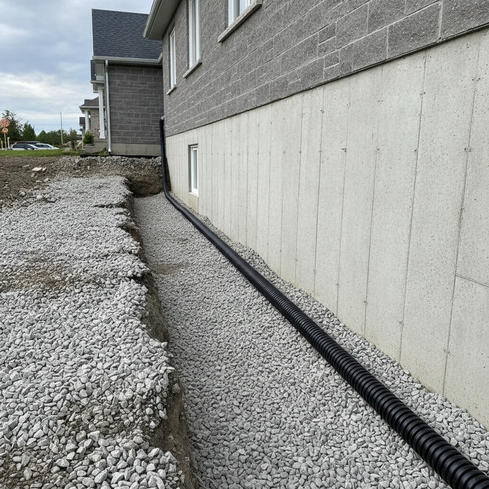
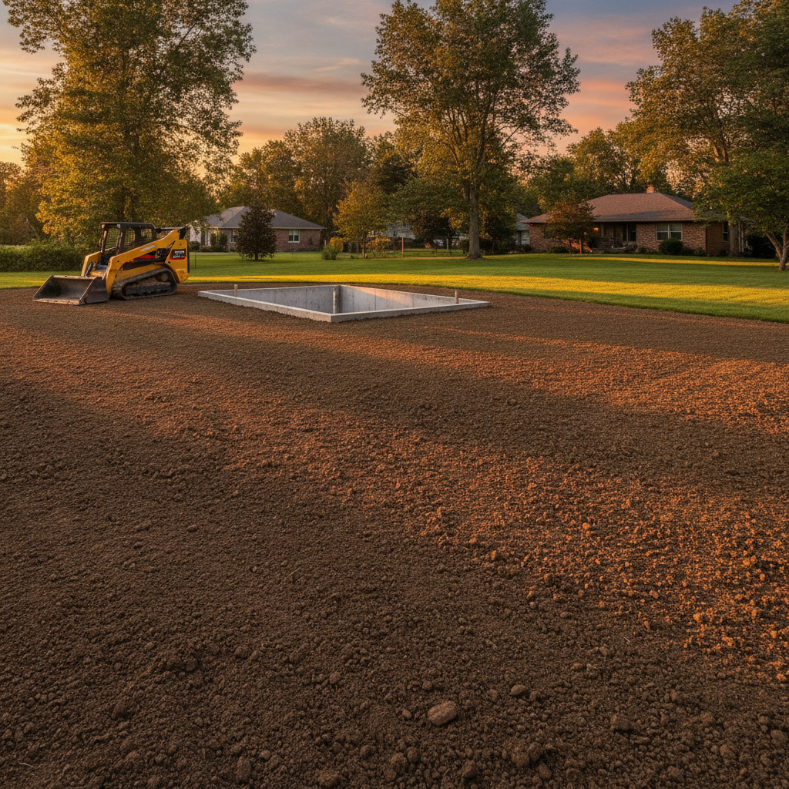
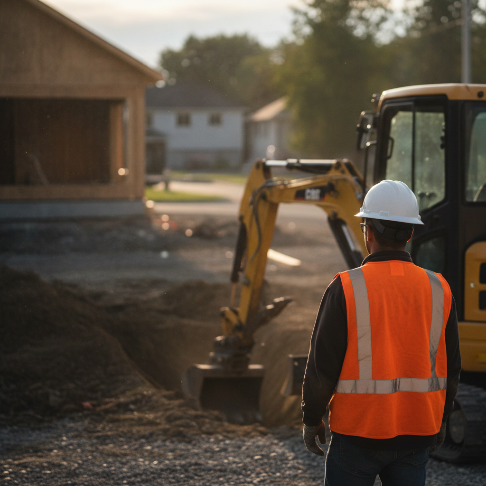

Nos réalisations
Projets récents
Un aperçu de nos travaux d'excavation à Trois-Rivières et dans la région de la Mauricie.




Excavation résidentielle et commerciale à Trois-Rivières. Fouilles, drainage, fosse septique, caméra d'inspection et plus — tout sous un même toit.
Estimation
Entreprise
Pleine couverture
De la fouille de fondation à l'installation de fosse septique — tous vos travaux d'excavation à Trois-Rivières sous un même toit.
Fouilles de fondation, mini-excavation, entrée d'auto, terrassement et démolition. Travail soigné et respect des délais.
Pose et réparation de drains français, aqueduc, égouts et drain de fondation. Solutions durables contre l'infiltration.
Installation et remplacement de systèmes septiques conformes aux normes. Service complet de A à Z.
Diagnostic précis de vos conduites d'égout et de drain. Identifiez les problèmes sans creuser inutilement.
Transport de sable, terre, gravier et rejets. Vente de matériaux en vrac : terre tamisée, pierre de rivière, poussière de pierre.
Service de déneigement résidentiel et commercial pour Trois-Rivières. Opération rapide après chaque tempête.
Du premier appel au projet terminé — chaque étape est claire et sans stress.
Appelez ou remplissez le formulaire. Nous vous répondons rapidement pour planifier une visite.
Nous visitons le terrain, analysons les besoins et vous fournissons une soumission détaillée gratuite.
Notre équipe effectue les travaux d'excavation avec précision, dans le respect des normes et des délais convenus.
Nous vérifions chaque détail avec vous. Le travail n'est terminé que lorsque vous êtes satisfait.

Bellerive Daniel Excavation est une entreprise locale de Trois-Rivières spécialisée en excavation résidentielle et commerciale. Daniel et son équipe offrent un service complet — des fouilles à l'inspection par caméra.
Basés à Trois-Rivières, nous desservons toute la région de la Mauricie avec une machinerie adaptée à chaque projet, du petit travail résidentiel aux travaux commerciaux.
Ce qui distingue Bellerive Daniel Excavation des autres entrepreneurs de la Mauricie.
Excavation, drainage, fosse septique, caméra, transport et déneigement — un seul appel pour tout.
Dirigée par Daniel, un entrepreneur de Trois-Rivières qui connaît le terrain et les besoins locaux.
Mini-excavation et terrassement soigné. Nous respectons les plans et les normes, chaque fois.
Pleine couverture d'assurance pour votre tranquillité d'esprit. Travail conforme aux normes en vigueur.
Soumission gratuite et retour d'appel rapide. Nous comprenons que vos projets ne peuvent pas attendre.
Terre tamisée, sable, pierre de rivière, poussière de pierre — livrés directement sur votre chantier.
Les valeurs qui guident chaque projet que nous prenons à Trois-Rivières.
Des années de travail d'excavation dans la région de Trois-Rivières. Daniel connaît les sols, les conditions et les défis locaux.
Machinerie bien entretenue et techniques éprouvées. Chaque fouille est propre, chaque terrassement est précis.
Pleine couverture d'assurance et travail conforme aux normes. Votre projet est entre bonnes mains du début à la fin.
Un aperçu de nos travaux d'excavation à Trois-Rivières et dans la région de la Mauricie.


Nous intervenons dans un rayon de 50 km autour de Trois-Rivières. Déplacement et estimation gratuits.
Appelez (819) 377-1750Appelez-nous ou remplissez le formulaire — nous vous répondons sous 24 heures.
2660 rue Charbonneau, Trois-Rivières, QC
Décrivez votre projet — nous vous répondrons sous 24 heures.
Merci de nous avoir contactés. Nous vous répondrons sous 24 heures.